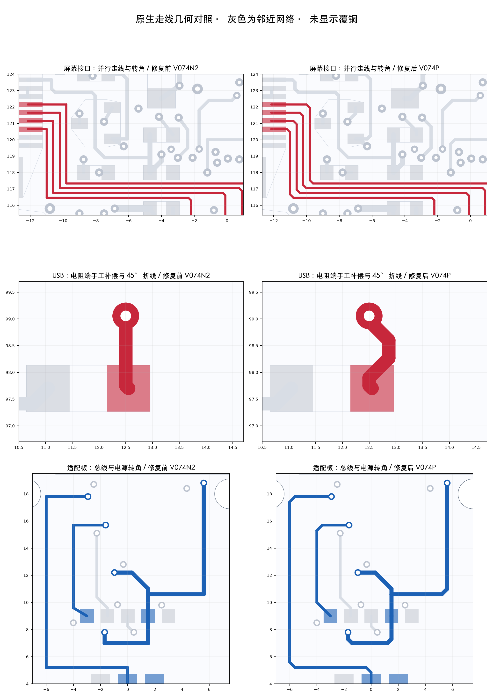

器灵内核 / PCB V0.7.4P / 2026-10-25
走线角度已修复，嘉立创工程已同步
主板与适配板已逐网络修整。保留已确认的元件布局、四凸耳安装孔与天线位置，覆铜已重建。
280 → 0普通非135°折角
211 → 0非45°方向线段
0 / 0双板DRC / 未连接
未使用自动布线与自动调长
在嘉立创中继续查看现有项目 Spirit_V074N_Manual_Routed_Final_20261025，主板修订丝印为 V074P。

点击图放大。对照图与分层图来自已核对的原生几何，隐藏覆铜以便检查走线；嘉立创预览直接取自本次原生工程。背面图仍按正面透视坐标显示。
复查结果
| 项目 | 主板 | 适配板 |
|---|
| 非45°方向线段 | 192 → 0 | 19 → 0 |
| 普通非135°折角 | 251 → 0 | 29 → 0 |
| 原生DRC / 未连接 | 0 / 0 | 0 / 0 |
| 元件 / 实体焊盘 | 129 / 457 | 16 / 65 |
| 元件包络间距 | 最小约0.218 mm | 最小约0.550 mm |
| 网络 / 封装 / 元件位置 | 保持一致，无新增元件重叠 |
| 板框 / 安装孔 / 叠层 | 保持不变，孔距38×61.5 mm |
| 覆铜 / 导出 | 孔周与天线禁铜通过；GND内层连续；原生导出几何与当前工程一致 |
角度容差±0.5°，线段长度阈值0.05mm；普通折角统计排除直线、焊盘/过孔内部和分支节点。分支连接单独按连通与间距检查，不强制每个交汇角都为135°。
具体改动
修整电源、USB、LCD、触摸、音频、传感器与配件总线的引出线和转角。USB倒角后出现长度差报错，已人工调整D+电阻端的实际路径并重新通过既有规则，没有放宽检查条件。
为了给PGOOD信号留出间距，将一个LCD供电过孔向左移0.15mm；全部元件、孔位、板框保持原位。ESP32-S3仍在正面最下端，天线朝下伸出板边。
本轮完成角度修复及几何、连通检查。USB实际阻抗与信号完整性、真实屏幕排线、NFC射频、满载温升和整机装配仍需样机验证。旧STL安装柱与横插J7配套仍待同步。
完整记录
器灵 PCB V0.7.4P 布线角度修复 — 2026-10-25
结论：已在现有嘉立创原生工程中修复主板及适配板的走线角度，并完成保存、覆铜重建、原生检查与导出一致性复核。没有使用自动布线、自动寻路或自动调长功能。
当前项目仍为 Spirit_V074N_Manual_Routed_Final_20261025，主板修订丝印为 V074P；没有新增重复项目。
用户授权：针对“为什么布线有大量非135度角”，用户要求“你能直接修好吗”。本轮按这一要求修复，保留已确认的布局与四凸耳齐平板形。
修复结果：
- 主板：192段非45度方向线段 → 0；251处普通非135度折角 → 0。
- 适配板：19段非45度方向线段 → 0；29处普通非135度折角 → 0。
- 双板原生DRC均0，未连接均0；补充的几何间距检查均0。
- USB倒角后曾触发既有长度差规则，已在D+电阻端人工指定补偿路径后通过，未放宽规则。线宽0.254mm、差分主段边间距0.1524mm保持；沿板边的成对主段不变。
- 所有145个元件的位置、封装及网络保持不变；522个实体焊盘对应的网络关系保持。主板同面保守包络间距约0.218mm，适配板约0.550mm，无新增元件重叠。
- 只有LCD_VCC的一个过孔向左移动0.15mm，并调整其相连走线，为PGOOD信号留出间距；过孔数量和孔径不变。
- 板框、四个安装孔及叠层保持不变；38×61.5mm孔距、71.5mm板长、ESP32-S3正面底部天线朝下伸出保持。
- 两板覆铜已重建，主板GND内层保持连续，天线禁铜区和安装孔周检查通过。
- 本次原生导出文件与最终工程回读几何一致，原理图及封装几何未变。
角度检查口径：
检查线段长度至少0.05mm、方向与0/45/90/135度网格偏差超过0.5度；普通两段线相接处检查135度内角，允许直线。焊盘/过孔内部的接入点、分支节点和微小数值线段不按普通拐角计数。T形分支等连接处不强行改成135度。各网络路径点和倒角位置逐项指定，脚本只负责写入所选坐标和复核。
USB检查边界：
嘉立创当前差分规则按网络线段总长度计算，包括USB-C并联触点分支，不能解释为实测传播延迟或实际阻抗匹配。当前规则通过；90Ω目标仍须结合最终制造叠层核实，USB信号完整性需实物验证。
交付：
Spirit_V074P_Angle_Repaired_20261025.epro2 为当前修复版；修改前_V074N2.epro2 为本次修改前原生备份。原生回读、逐段修复记录、验证JSON、对照图和分层图一并保存。
既有待验证项：
已有GC9A01屏的12针排线/接触面/背光、NFC线束及屏幕后射频、满载温升/低电量、机械装配仍待实物核实。旧STL四根安装柱和横插J7配套未在本次改动，仍需同步。继续采用M2尼龙螺丝及塑料支柱。没有下单，零DRC不等于实物验收完成。